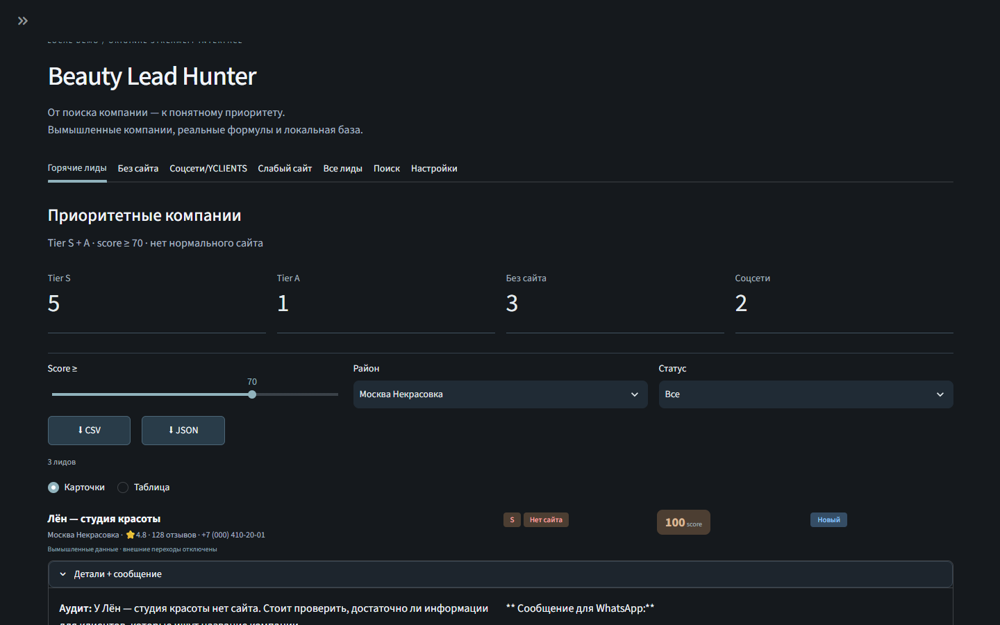

Master walkthrough / две реализации
Первая часть — n8n Atlas / Leads, вторая — Python/Streamlit Beauty Lead Hunter. Монтаж не означает общий backend; оба сценария показаны на синтетических компаниях.
Вторая реализация / Beauty Lead Hunter
Исходный Python/Playwright/Streamlit/SQLite pipeline: поиск, оценка сайта, scoring и управление статусом. Это отдельная реализация того же B2B-направления, а не ещё один продукт в витрине. Сетевой сбор в demo отключён, компании вымышленные.

UI создан для портфолио. Структура этапов соответствует исходному workflow; Google Maps, сайты, модель и Google Sheets заменены синтетическими локальными данными.